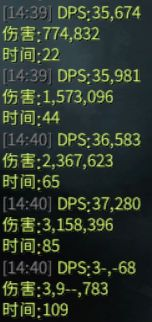
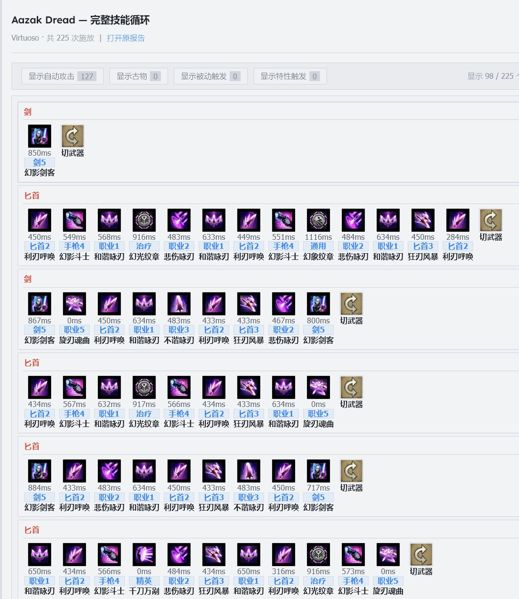
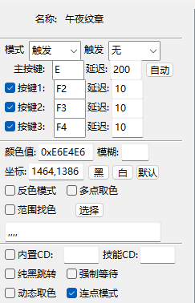
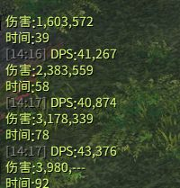
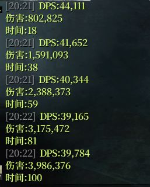

症状时空 0灌注 2食物 37K
幻影斗士，幻象反击，幻象反击=1=切武器|幻影斗士，幻象反击，3豆黑=相位撤退，困惑镜像，幻影术士，混乱护甲，幻影术士>>4000=幻光纹章，混乱风暴，魔法子弹，时空转移，幻象反击>>2000=杖切法，相位撤退>>1500=法切杖|3豆=时间沉降，3豆=回归原位，3豆=分裂时间，3豆=失真，3豆黑=双面镜像| 幻影斗士,4,550|幻象反击,2,300,,,,,,,,,,,,,,,,,,0,,1,,,4500|切武器,`,150,3,600,f5|3豆黑|相位撤退,2,0,,,,,,,,,,,,,,,,,,0,,0,,,6000|困惑镜像,3,1923|幻影术士,3,880,,,,,,,,,,,,,,,,,,0,,0,,,8400|混乱护甲,4,1|幻光纹章,6,919|混乱风暴,5,481|魔法子弹,5,434|时空转移,f5,1|杖切法,`,150,f5,1,3,600,,,,,,,,,,,,,,0,,1|法切杖,`,150,2,500,,,,,,,,,,,,,,,,0,,1|3豆,,,,,,,,,,,,,,,,,,,,0,,0,1|时间沉降,f3|回归原位,f2|分裂时间,f1|失真,f4|双面镜像,9 [&DQcBJRg9KDojDyMPgQFpAYMBawFrAYMB7RK8AQAAAAAAAAAAAAAAAAAAAAADWQBWADYAAA==] 全套毒蛇，武器法杖 超级恶魔、大地 节枪 超级恶魔、大地，碎层古物。
挺有意思的，这个bd，可以碎层玩玩，但副本就算了，法杖2号位移够呛。
另外，这套循环可以把bd改成野外，点出急速效果，装备换成天界，也很强力，跟以前的野外蜃楼有一拼，可以自己尝试。

0灌注，2食物 在37K左右，灌注满可能在38-39K，
跟sc的44k差的还比较远，没搞懂是哪里的问题，这里没有参考SC部分法印配装，实测大地+碎层古物输出要高于 折磨+阿奇姆。
使用最新版程序，一键导入支持导入所有参数，1.78之前的可能会缺少部分参数。
评论列表（27）
改野外的话 特性要怎么改？ 点出机不可失那个急速就可以了吗
这套新的症状灵刃能弄一个吗 还是编不来

@13850868452 匕首3，剑5，f5，匕首2，切武器|满豆=f2，满豆=f2cd=f1，满豆=f2cd=f1cd=f5，满豆=f2cd=f1cd=f3，剑5，枪4，匕首2，匕首3，枪5=治疗，f2cd=f1cd=纹章，千刀万剐，剑5=2=切武器，枪5=切武器，普攻||
匕首3,e,430|剑5,f,880|f5,5,250|匕首2,q,450|切武器,`,250|满豆|f2,2,250|f2cd|f1,1,250|f1cd|f3,3,250|剑4,f,665|枪5|治疗,v,1000|纹章,c,1250|千刀万剐,t,20|普攻,[,
[&DQcBHRgdQjsjDyMPgQGDAYMBjwGCAYIB5RrtEgAAAAAAAAAAAAAAAAAAAAADLwBaADEAAA==]
来个大佬优化一下
@13850868452 38k多没什么意义啊也不能拔增益
怎么才能让法杖5在F5期间秒放，F5冷却时杖切法后晚5秒才放
@小o f5二段=法杖5，放到优先级最高，如果是f5自动时间结束，不好判断，一般可以用f5>7000=法杖5 7秒是自动结束后的中间值，一般f5就持续2-3秒
杖切法 法切杖怎么区分
@风卷残云 通过前置技能判断是哪个武器，然后再切武器
@melis "前置"们可能都在cd啊
@melis 1技能在使用时又会变色
改了下为什么只放一个午夜纹章和F2就不放了？

@小o 因为f1 f2 f3虽然是瞬发，但是有50毫秒的间隔，你跟随用，10毫秒f1 f2 f3很大概率会跳过，还有你e技能的延迟肯定不只有200，最少是560-880毫秒。
@melis 改了还是这样，只跟随一个技能，其他手按的能到43

@小o 主按键e 880 F1 50 f2 50 f3 50
位移太多了 有点难受
老师，这个专精点什么啊？
@墨鱼 专精？是特性吧，复制到工具中 把[ ]全部复制 粘贴到游戏聊天栏
@melis 好的好的！谢谢
这个我看星呷岛是点的混沌线呀
@默 不是星钾岛 那个是火炬
什么符文呢
@Lny 陷阱
运行一遍不切武器了 为什么？
@默 新版导入，否则不支持技能cd计算
0灌，普通食物/扳手，感觉还是到不了SC43
评论图片
评论图片

@纸 我觉得可以用了，而且很流畅。
@melis 昨天试了一下，转阶段比其他职业掉伤严重，BOSS动一下再掉一次。